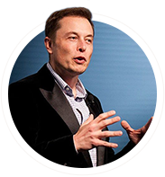

Tesla Motors is an American company that specializes in electric automotives, energy storage and solar panel manufacturing based in Palo Alto, California. Founded in 2003, the company specializes in electric cars, lithium-ion battery energy storage, and residential photovoltaic panels (through the subsidiary company SolarCity). The additional products Tesla sells include the Tesla Powerwall and Powerpack batteries, solar panels and solar roof tiles.
Elon Musk
Explorer Inventor Engineer
Who

Elon Reeve Musk (born June 28, 1971) is a South African-born American Canadian business magnate, investor, engineer, and inventor. He is the founder, CEO, and lead designer of SpaceX; co-founder, CEO, and product architect of Tesla, Inc.; and chairman of SolarCity. In December 2016, he was ranked 21st on the Forbes list of The World's Most Powerful People. As of February 2018, he has a net worth of $20.8 billion and is listed by Forbes as the 53rd richest person in the world.
Education
At the age of 17, Musk was accepted into Queen's University in Kingston, Ontario, for undergraduate study. In 1992, after spending two years at Queen's University, Musk transferred to the University of Pennsylvania, where in May 1997 he received a Bachelor of Science degree in physics from its College of Arts and Sciences, and a Bachelor of Science degree in economics from its Wharton School of Business. Musk extended his studies for one year to finish the second bachelor's degree.
In 1995, at age 24, Musk moved to California to begin a PhD in applied physics and materials science at Stanford University, but left the program after two days to pursue his entrepreneurial aspirations in the areas of the internet, renewable energy and outer space.
What
SpaceX, is a private American aerospace manufacturer and space transport services company headquartered in Hawthorne, California. It was founded in 2002 with the goal of reducing space transportation costs and enabling the colonization of Mars. SpaceX has since developed the Falcon launch vehicle family and the Dragon spacecraft family, which both currently deliver payloads into Earth orbit.
SolarCity markets, manufactures, and installs residential and commercial solar panels in the US. It has also provided other energy services. In 2016, the company merged with Tesla, Inc. and now offers energy storage services through Tesla, including a turnkey residential battery backup service that incorporates Tesla's Powerwall. The company, in partnership with Panasonic, operates the Tesla Gigafactory 2 in Buffalo, New York, where it manufactures solar module components.
To solve the problem of soul-destroying traffic, roads must go 3D, which means either flying cars or tunnels. Unlike flying cars, tunnels are weatherproof, out of sight and won't fall on your head. A large network of tunnels many levels deep would fix congestion in any city, no matter how large it grew (just keep adding levels). The key to making this work is increasing tunneling speed and dropping costs by a factor of 10 or more – this is the goal of The Boring Company.
A Hyperloop is a proposed mode of passenger and/or freight transportation, first used to describe an open-source vactrain design released by a joint team from Tesla and SpaceX. Drawing heavily from Robert Goddard's vactrain, a hyperloop is a sealed tube or system of tubes through which a pod may travel free of air resistance or friction conveying people or objects at high speed while being very efficient.